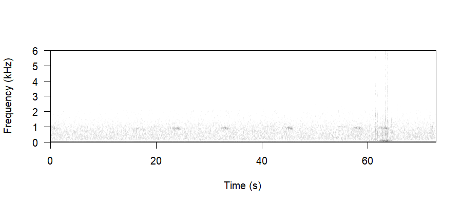

Call Dictionary
A reference guide to Western Screech-Owl calls, with multiple recorded examples of each. Click play to listen.
Food Delivery: Call
These short, staccato calls are always heard in relation to food being brought to the nest.


Barking
Barks are loud, short bursts with lots of harmonics, and are usually a sign that an owl is agitated. They’re typically heard from the female once the chicks are a little older or have fledged; however, they can occur whenever an owl is agitated, potentially in response to a predator, often a non-volant one (e.g. human, dog, raccoon, etc.).

Chick Begging
Chicks will often, but not always, beg for food from their parents. This most often happens at the beginning of the evening, before they’ve been fed, and it tapers off as they become satiated. However, some chicks won’t beg as often if the brood size is small, since chicks tend to be more satiated compared to nests with a larger brood, where chicks need to vie for food against their brood-mates.


Song: Double Trill
Males often give a double-trill as a more aggressive song, sometimes heard in response to call playback.

Female: Begging
Females, like chicks, will often utter a begging call to males when they are hungry or wanting attention.

Female: Drumming
Females will drum; however, there are very few observations of this behaviour, and it’s unclear exactly what the drumming signifies. This is much less understood than drumming in males.

Female: Whinny
Like the begging call, females will utter a whinny as either a contact call or a bid for attention or food.

Two female maybe
